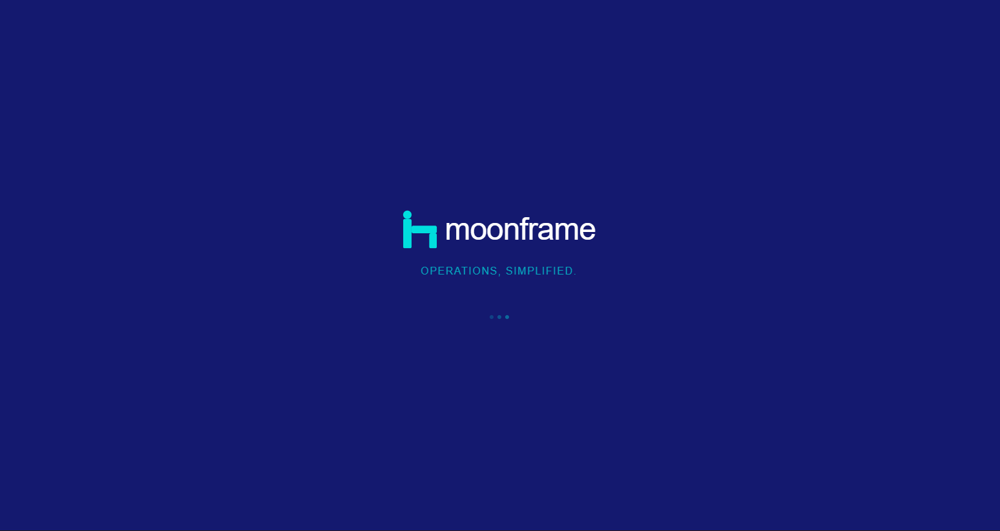
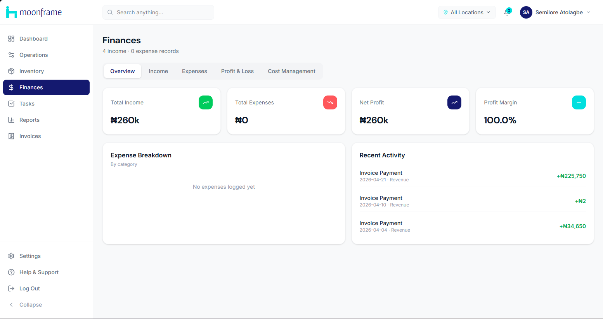
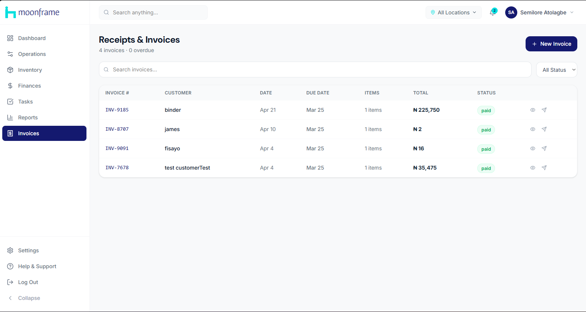
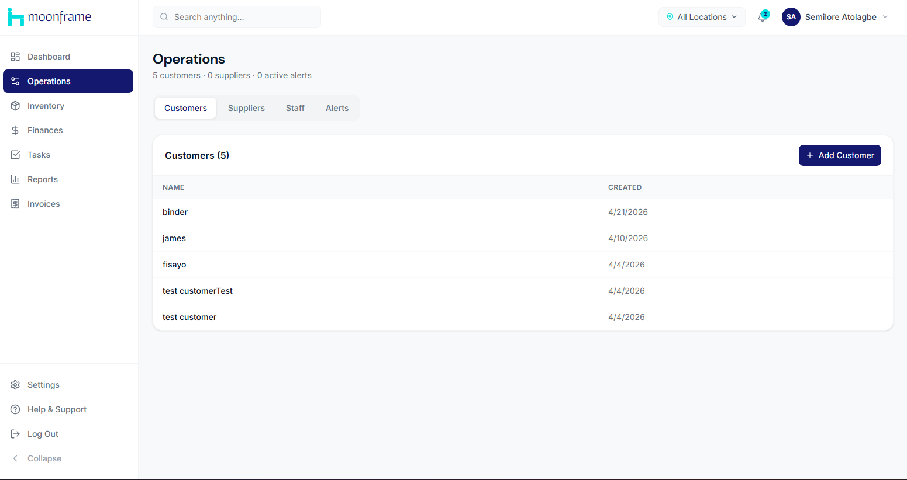
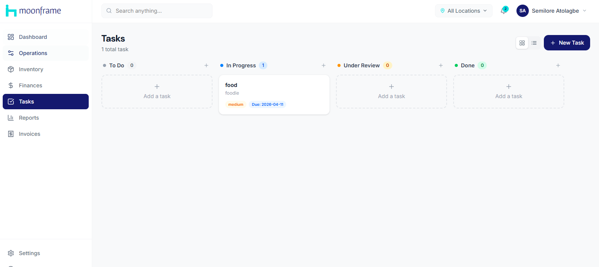
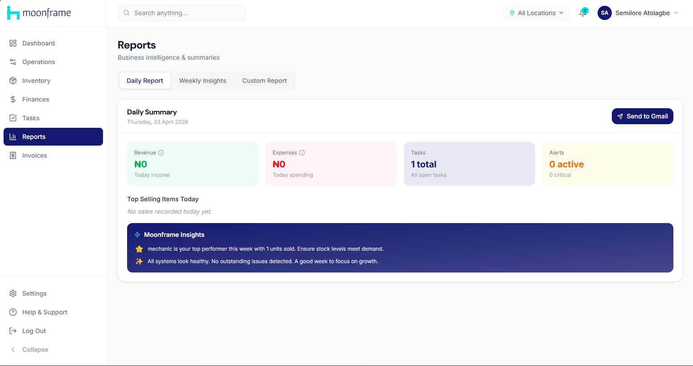

Small businesses in Nigeria don't fail because they have bad products. They fail because they have no operational memory. Revenue goes into a notebook. Inventory lives in someone's head. Tasks are WhatsApp messages that disappear. The business runs on the founder's memory, and when the founder is overwhelmed — which is always — things fall through.
I watched this happen repeatedly. The tools that exist either cost too much, assume too much technical knowledge, or solve one problem while ignoring five others. So I built Moonframe.
"The infrastructure beneath all of that — the servers, the deployment pipeline, the networking — was a layer I had never looked at directly. They just seemed to be."
Moonframe is an all-in-one business operations platform. Revenue tracking, inventory management, invoicing, task management, and business intelligence reports — in a single dashboard. It runs on Supabase, which gave me authentication, a real-time database, and file storage without building a backend from scratch.






The stack choice was deliberate. Supabase handles authentication, the Postgres database, real-time subscriptions, and file storage — which means I didn't have to write, deploy, or maintain a backend. That freed me to focus on the product layer: what data to capture, how to surface it, and what the interface should feel like for someone who isn't technical.
The frontend is built in React. Multi-location support is baked in from day one, because small businesses in Nigeria often operate across more than one site. The reporting layer includes a "Moonframe Insights" feature that generates natural language summaries of business performance.
The most important thing I learned had nothing to do with code. It was about infrastructure. Before Moonframe, I knew Supabase ran the app the way most people know a plane flies — functionally, without looking underneath. Building something real forced me to understand the layer beneath: what a server actually is, why PaaS platforms exist, and what deployment means step by step.
That understanding changed how I think about every product decision. Choosing a platform isn't a technical checkbox — it's a question of cost, control, scale, and what the product will need next. I wrote a full piece about it.
Moonframe is an active MVP. The core modules — finances, invoicing, operations, inventory, tasks, and reports — are built and working. I'm currently iterating on the intelligence layer and planning the next round of user testing with small business owners in Abuja.